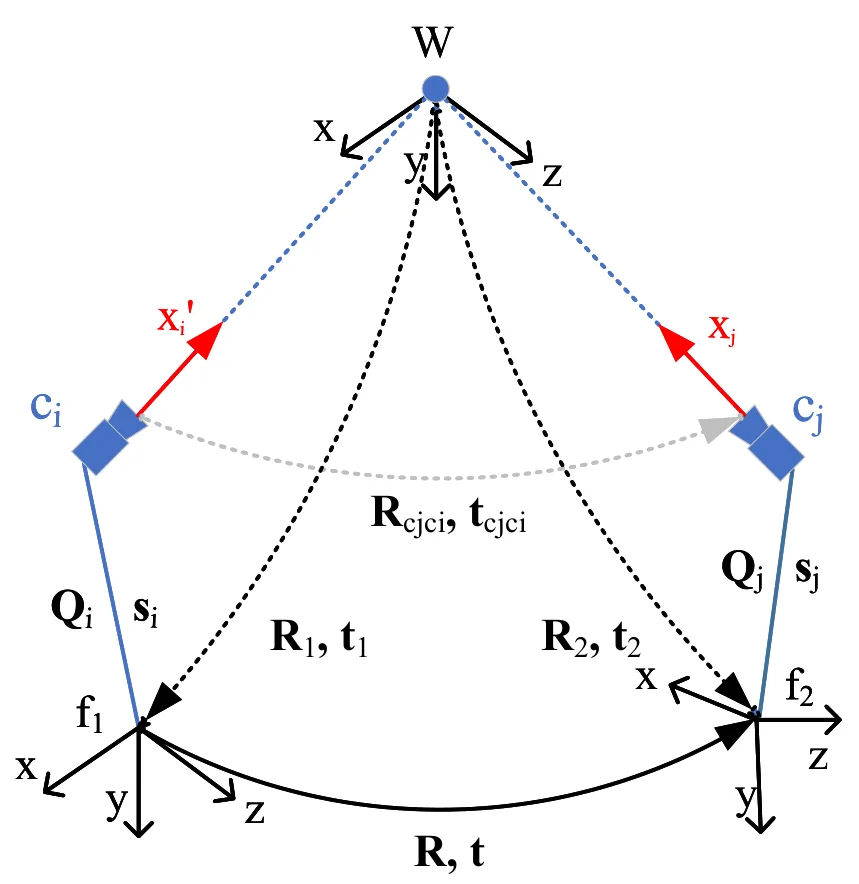
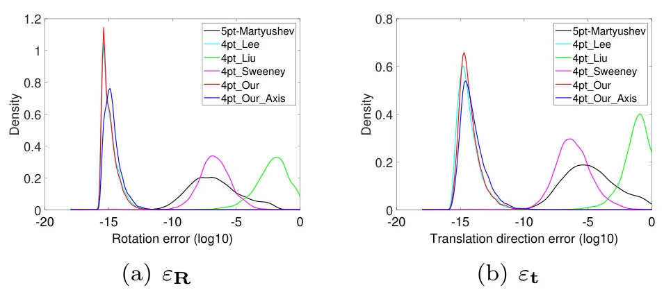
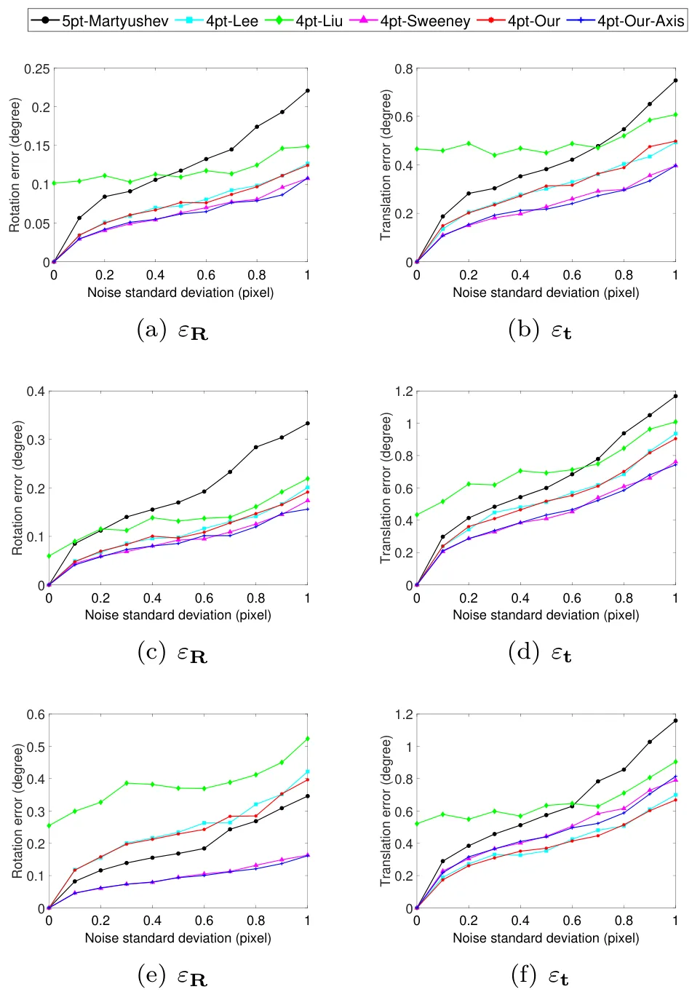
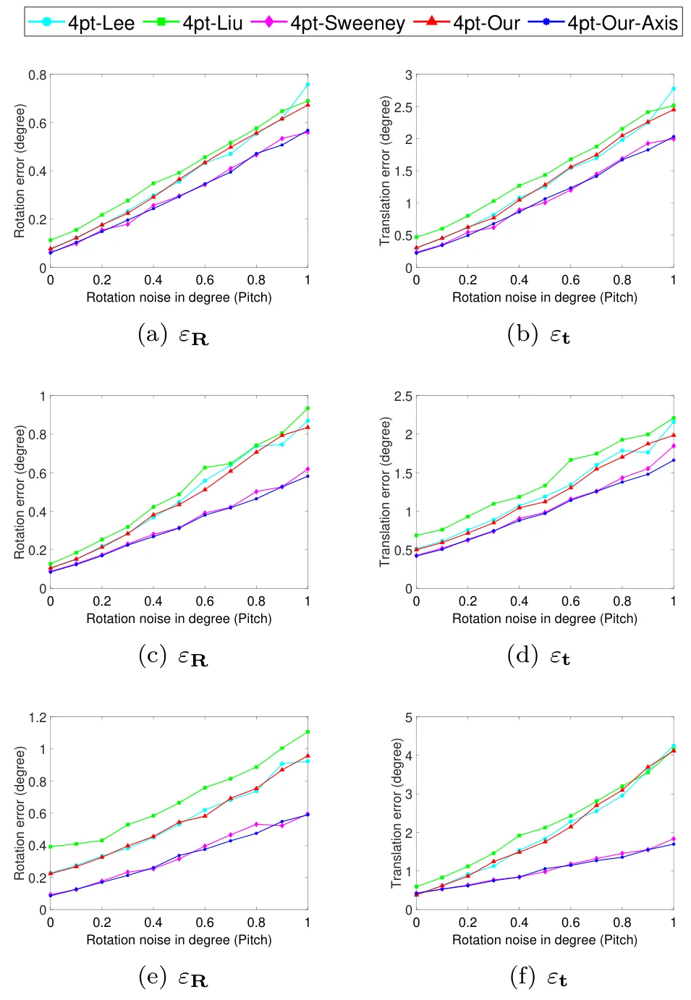
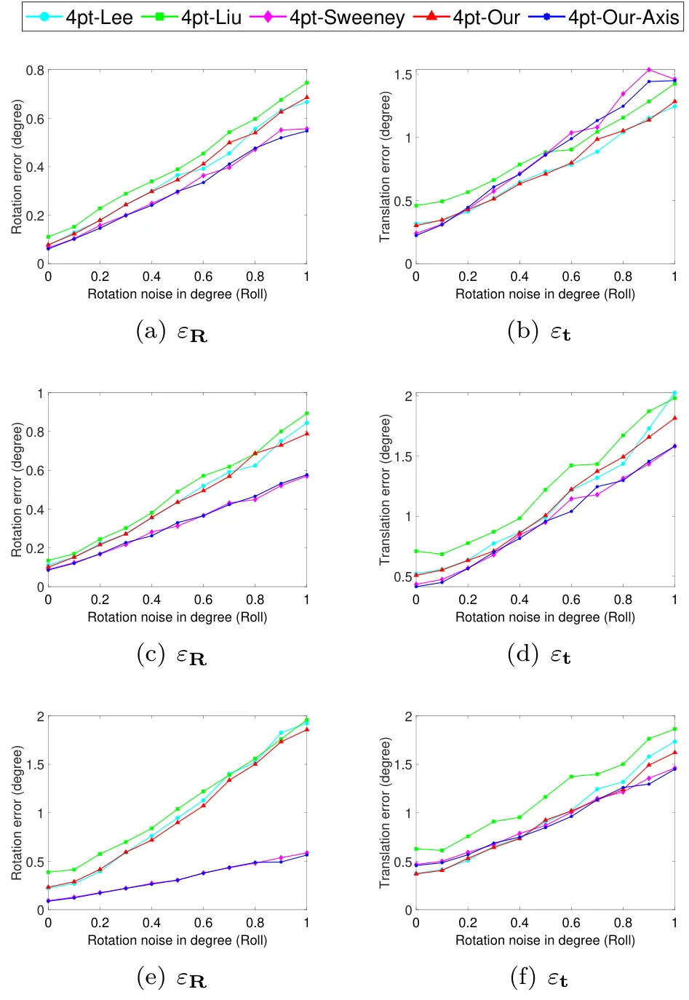
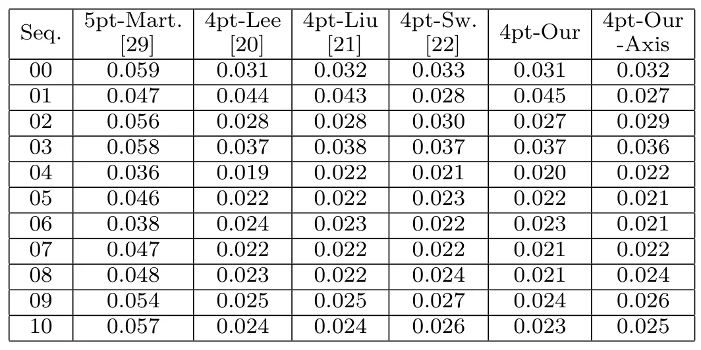
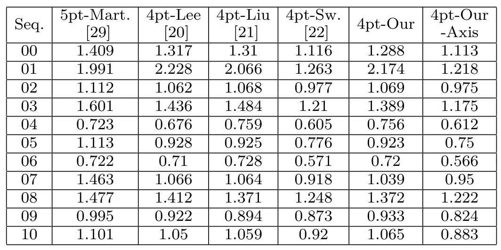

面向多相机系统视觉惯性相对位姿估计的高效最小解Efficient Minimal Solvers for Visual-Inertial Relative Pose Estimation in Multi-Camera Systems
直接面向视觉惯性里程计和多相机 rig，相对位姿前端实用性强；后续需看噪声、IMU 先验误差和外点率下的鲁棒性。
一句话工作总结
论文提出利用 IMU 方向先验的 4 点多相机相对位姿最小解，可降低 VIO/VO RANSAC 前端的求解成本。
摘要
多相机系统相对位姿估计是自动驾驶、移动设备和 UAV 中的基础问题。既有方案通常计算复杂度高，或需要过多点对应，限制了真实系统中的 RANSAC 效率。本文基于新的参数化提出两个高效 minimal solvers：第一个使用 IMU 提供的竖直方向先验，第二个使用 IMU 提供的旋转轴方向先验。两种方法都只需要 4 个点对应，并把多相机相对位姿估计化简为求解一元 6 次多项式，相比常见 8 次多项式方案降低了复杂度。合成数据和 KITTI benchmark 评估表明，这些 solver 在计算效率上优于相关方法，并保持有竞争力的精度，尤其适合集成到 RANSAC 框架中。
Estimating the relative poses of multi-camera systems is a fundamental problem in computer vision, with critical applications in autonomous vehicles, mobile devices, and unmanned aerial vehicles (UAVs). However, existing solutions often suffer from high computational complexity or rely on an excessive number of point correspondences, limiting their real-world applicability. To address these limitations, we propose two efficient minimal solvers for estimating the relative poses of multi-camera systems using a novel parameterization. The first solver leverages the vertical direction prior provided by Inertial Measurement Units (IMUs), while the second utilizes the rotation axis direction prior from IMUs. Our methods require only four point correspondences and reduce the problem of multi-camera relative pose estimation to solving a univariate 6th-degree polynomial, a significant improvement over existing approaches, which typically involve 8th-degree polynomials. This reduction in computational complexity and correspondence requirements makes our solvers particularly effective when integrated into RANSAC frameworks, demonstrating strong potential for visual odometry applications. Through rigorous evaluations on synthetic data and the KITTI benchmark, our methods achieved superior computational efficiency and competitive accuracy compared to state-of-the-art algorithms.
中文解读摘录
- 作者：Yongfei Guo, Qizhou Huo, Xuan Sun, Yuanhao Gong；类别：cs.CV / cs.GR / cs.MM / eess.IV / math.OC；发布日期：2026-06-06；采集 score=17
- 核心问题：标准 3DGS photometric loss 对平坦区和结构丰富区一视同仁，容易牺牲边缘、轮廓和细节；EGGS 虽引入 edge-guided weighting，但主要依赖一阶梯度和线性权重。
- 方法亮点：LEGS 用二阶 Laplacian 结构响应替代一阶梯度响应，并通过非线性 response-to-weight 函数生成 pixel-wise loss 权重；渲染管线不变，属于可插拔的 loss-level 扩展。
- 结果信号：在完整 Tanks&Temples 与 Mip-NeRF360 上，论文称相对 3DGS 最高提升 1.68 dB PSNR，相对 EGGS 最高提升 0.52 dB；迁移到 FastGS/FasterGS 后最高仍可提升 1.69 dB。
- 关注价值：如果代码可复现，它是低侵入式提升 3DGS 地图边缘清晰度和细节保真的方法，适合与 SLAM/重建后的 Gaussian 地图优化阶段结合。
图表/页面预览

{kind=link}

{kind=link}

{kind=link}

{kind=link}

{kind=link}

{kind=link}

{kind=link}
